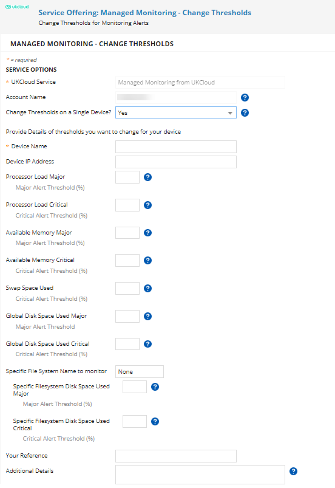
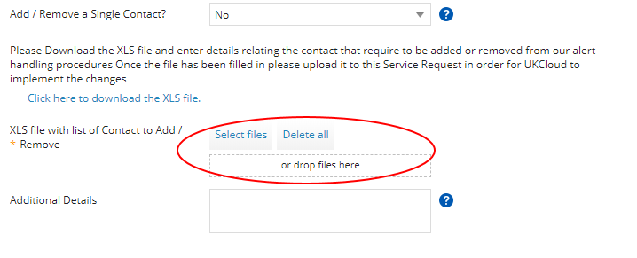

How to change your service configuration for Managed Monitoring from UKCloud
Overview
With Managed Monitoring from UKCloud, our Network Operations Centre (NOC) monitors your devices, receiving and reacting to any abnormal events, only escalating those events that genuinely require your attention.
When we first provision the service, we set it up with default thresholds for the devices you've selected to monitor, unless you specified different thresholds in your initial request. At any time, you can raise a Service Request to change these thresholds and other service configuration details.
This article provides information about the default monitoring thresholds and alerting procedures and shows you how to change your service configuration.
Managed Monitoring from UKCloud default configuration
Default monitoring thresholds
Managed Monitoring thresholds determine when alerts are raised against your monitored devices. The following table shows the default thresholds used by the service. If you want to use different thresholds you can identify these in your initial request or change them later.
| Item | Alert type | Default threshold |
|---|---|---|
| Processor load | Major Alert | 80% |
| Processor load | Critical Alert | 90% |
| Available memory | Major Alert | 85% |
| Available memory | Critical Alert | 95% |
| Swap space used | Major Alert | 80% |
| Global disk space used | Major Alert | 75% |
| Global disk space used | Critical | 85% |
| Specific Filesystem disk space used | Major Alert | 75% |
| Specific Filesystem disk space used | Critical Alert | 85% |
Default alert handling procedures
If a threshold is exceeded, a major or critical alert is raised as appropriate. The procedure followed for these alerts is dependent on the alert type and whether you have identified the device as critical. The following table shows the default alert handling procedures for the different alert types and criticality.
| Alert type | Critical item | UKCloud action |
|---|---|---|
| Major Alert | No |
|
| Major Alert | Yes | As above. |
| Critical Alert | No | As above. |
| Critical Alert | Yes |
|
Making changes to your service configuration
To make any changes to your Managed Monitoring from UKCloud service, you must log a Service Request via the UKCloud Portal. For general information about raising a Service Request, see How to use My Calls in the UKCloud Portal.
If you want to make changes to more than one item, you'll be provided with a link to download a spreadsheet to specify the list of items that need amending. When filling out the spreadsheet, ensure that you fill in the correct tab, depending on the change required. If you want to download the file ahead of raising the request, click here. You can attach the file to the request offering before submitting to UKCloud.
You can change the following service configurations:
Adding or removing a monitored device
If there's a new device that you want to add to your Managed Monitoring from UKCloud service, or if there's a device that you no longer want to be monitored, you can let us know by raising a Service Request.
In My Calls, raise a ticket using the Add or Remove Monitored Devices Managed Monitoring template.
From the Action list, select:
Add New Device to add a device to the service
Remove Existing Device to remove an item from the service
Add New Device and Remove Existing if you want to both add and remove devices
If you want to add or remove multiple devices, from the Add / Remove a Single Device? list, select No.
For more information about adding or removing multiple devices, see Filling out the Managed Monitoring spreadsheet.
If you're adding or removing a single device, in the Device Name field, enter the name of the device you want to add or remove.
In the Device IP Address field, enter the IP address of the device.
From the Critical Item? list, specify whether or not the device is critical to your environment.
The critical status of a device determines the procedure followed when an alert is raised, as described in Default alert handling procedures.
In the Effective From field, use the data picker to specify when you want the item to be added or removed.
In the Your Reference field, if you have any reference of your own that you'd like to record against the request (for example, your own ticket number, project ID or change record number), you can record it here.
Enter any Additional Details as necessary.

When you're done, click Review & Submit then Submit.
As per our standard customer service targets, we aim to resolve your request within two working days.
Changing escalation contact information
It's important that you keep the escalation contact information held for your Managed Monitoring service up to date to ensure that the correct person is contacted if we need to escalate an alert.
In My Calls, raise a ticket using the Add or Remove Escalation Contacts Managed Monitoring template.
From the Action field, select:
Add new contact to add a new escalation contact for your Managed Monitoring service
Remove existing contact to remove a contact from your Managed Monitoring service
Add a New Contact and Remove an Existing Contact if you want to both add and remove contacts
Tip
If you want to change the details of an existing contact, select Add new contact and specify in the Additional Details field which details have changed.
If you want to add or remove multiple contacts, from the Add / Remove a Single Contact? list, select No.
For more information about adding or removing multiple contacts, see Filling out the Managed Monitoring spreadsheet.
If you're adding or removing a single contact, in the Contact Name field, enter the name of the contact you want to add or remove.
Enter a Job Title and Role for the contact.
In the Contact Number field, enter the telephone number to use to call this contact if an escalation occurs.
In the Your Reference field, if you have any reference of your own that you'd like to record against the request (for example, your own ticket number, project ID or change record number), you can record it here.
Enter any Additional Details as necessary.

When you're done, click Review & Submit then Submit.
Changing monitoring thresholds
Monitoring thresholds determine under which circumstances alerts are escalated to you for your attention. The Managed Monitoring from UKCloud service defines default thresholds, but you can change these by raising a Service Request.
In My Calls, raise a ticket using the Change Thresholds Managed Monitoring template.
If you want to change thresholds for multiple devices, from the Change Thresholds on a Single Device? list, select No.
For more information about changing thresholds for multiple devices, see Filling out the Managed Monitoring spreadsheet.
If you're changing thresholds for a single device, in the Device Name field, enter the name of the device for which you want to change the thresholds.
In the Device IP Address field, enter the IP address of the device.
Enter the thresholds for the following, as required:
Processor Load (Major and Critical Alerts)
Available Memory (Major and Critical Alerts)
Swap Space Used (Critical Alerts)
Global Disk Space Used (Major and Critical Alerts)
Specific Filesystem Disk Space Used (Major and Critical Alerts)
In the Your Reference field, if you have any reference of your own that you'd like to record against the request (for example, your own ticket number, project ID or change record number), you can record it here.
Enter any Additional Details as necessary.

When you're done, click Review & Submit then Submit.
Providing notification of maintenance windows
If you're planning maintenance that will affect a monitored device, provide details of the maintenance window, including any instructions for how we should deal with alerts that occur during the maintenance period.
In My Calls, raise a ticket using the Maintenance Window Managed Monitoring template.
If you want to inform us of maintenance windows on multiple devices, from the Maintenance Window on a Single Device? list, select No.
For more information about notifying us of maintenance windows on multiple devices, see Filling out the Managed Monitoring spreadsheet.
If you're adding maintenance information for a single device, in the Device Name field, enter the name of the device to which the maintenance window applies.
In the Device IP Address field, enter the IP address of the device.
In the Start Date / Time field, use the data picker to specify the beginning of the maintenance window.
In the End Date / Time field, use the date picker to specify the end of the maintenance window.
In the Reason for Maintenance field, enter details of what kind of maintenance is taking place during the specified period.
In the Special Instructions for UKCloud during the Maintenance Window field, let us know how you want us to respond to alerts during the maintenance window.

When you're done, click Review & Submit then Submit.
Filling out the Managed Monitoring spreadsheet
If you want to change the configuration of multiple devices or contacts, rather than raising a separate Service Request for each device or contact, you can use the Managed Monitoring spreadsheet to specify all the changes you want to make in a single place.
In My Calls, raise a ticket using the appropriate Managed Monitoring template.
In the appropriate list, specify that you want to make changes to multiple devices or contacts.
For example, if you want add multiple escalation contacts for your service, raise a ticket using the Add or Remove Escalation Contacts template and select No from the Add / Remove a Single Contact? list.
You'll be provided with a link to the Managed Monitoring spreadsheet (UKC-FRM-257). Click the link to download the file.

Tip
If you want to download the spreadsheet in advance, you can download it from here.
Fill out the appropriate tabs of the spreadsheet, depending on the configuration changes you want to make.
Default Thresholds - For information only; do not change the contents of this tab
Default Handling Procedures - For information only; do not change the contents of this tab
Add Devices to Monitoring - Provide details of any devices you want to add to your Managed Monitoring service
Remove Devices from Monitoring - Provide details of any devices you want to remove from your Managed Monitoring service
Add Remove Escalation Contact - Provide details of any escalation contacts you want to add or remove
Change Thresholds - Provide details of any changes you want to make to monitoring thresholds
Maintenance Window Notification - Provide details of maintenance windows that will affect your monitored devices
Note
Only provide details in one tab. If you want to make different types of changes (for example, adding devices and changing thresholds), raise a Service Request for each type of change, with a separate spreadsheet for each.
When you've finished completing the spreadsheet, in your ticket, either click Select files and browse to the completed spreadsheet or drag the spreadsheet into the template.

When you're done, click Review & Submit then Submit.
Feedback
If you find an issue with this article, click Improve this Doc to suggest a change. If you have an idea for how we could improve any of our services, visit the Ideas section of the UKCloud Community.